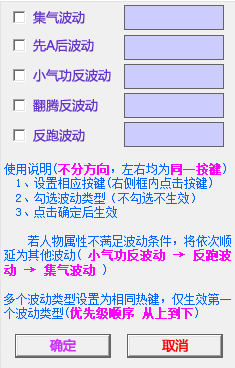

一键波动 (试验功能，不接受任何bug或失效反馈)
鼠标左键点击
，一键波动生效
鼠标右键点击
，将弹出以下窗口；在此处可配置波动触发按键，点击确定后生效
此功能需与波动配套工具一起食用，左右方向波动按键为同一触发键，角色面向哪个方向就触发该方向波动

 ，一键波动生效
，将弹出以下窗口；在此处可配置波动触发按键，点击确定后生效
，一键波动生效
，将弹出以下窗口；在此处可配置波动触发按键，点击确定后生效